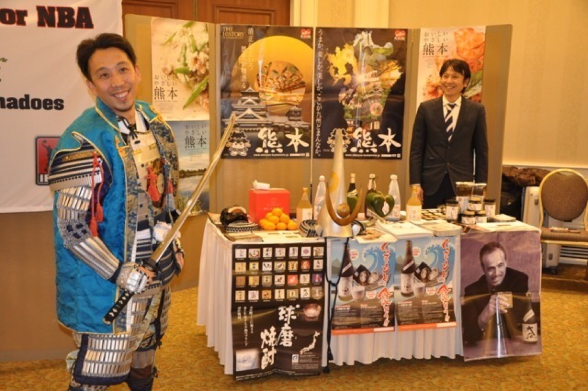

日本の商品・事業・技術・人材を、海外で継続する仕組みへ変える。
調査資料では終わらせず、現地で動き、成果を次へつなぎます。
相談だけで実施が決まることはありません。課題整理からお話しください。
自治体・企業それぞれの立場や状況を踏まえ、解決すべき課題と目指す成果を整理します。
企画・戦略の提案にとどまらず、関係者との調整や現地対応、実施後のフォローまで一貫して支援します。
予算や実施時期、具体的な内容が決まっていない段階でもご相談いただけます。状況を伺いながら、実現可能な進め方をご提案します。
設計の結論
私たちは、計画をつくるだけでなく、成果につながる実行まで共に担います。
支援を機能別に分けるのではなく、依頼者が次の判断をできる成果物へまとめます。調査、企画、商談、運営、輸出、報告を、必要な範囲で依頼できます。
2010年、北米・ポートランドから始まった実践は、16年間、日本と海外の間に価値が循環し続ける架け橋をつくってきました。
ARCH PROJECTの歩みを見る
対象、予算、時期が未定でも構いません。現在分かっていることと、まだ決まっていないことを整理します。
相談する